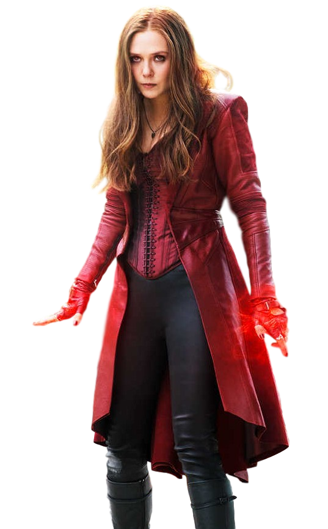

My Favorite Super Heroes

Thor
Thor was one of the most important and famous gods in Norse mythology. He was the son of Odin and Fyorgyn, the earth goddess. Thor was considered the storm-weather god of sky and thunder and also a fertility god. His wife was Sif, a goddess also linked to fertility.

Scarlet Witch
Main power is the superhuman ability to manipulate chaos magic, given to her by the demon Chthon (imprisoned within Wundagore Mountain) when she was born

Black Widow
Born circa 1928, Natalia "Natasha" Romanova was apparently orphaned as a child when she was trapped in a burning building during an early attack on Stalingrad by enemy forces. Ivan Petrovitch Bezukhov, a Soviet soldier, found Natasha in the inferno and rescued her.